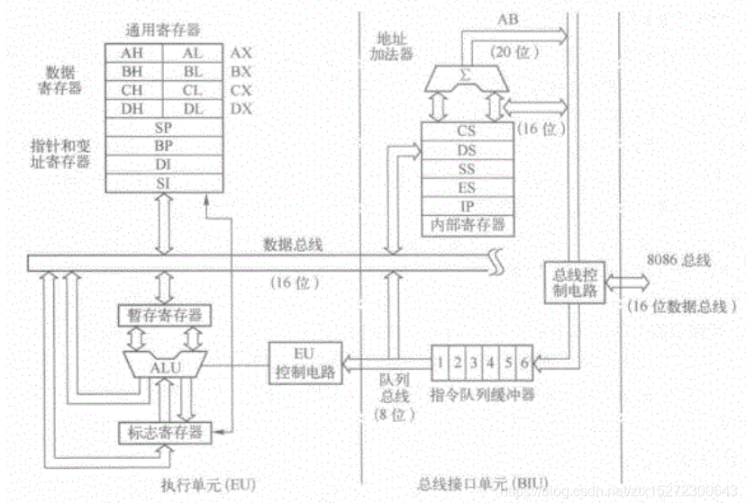
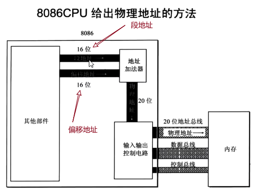

CPU 组成
一个典型的CPU大概由运算器、控制器、寄存器构成。外部总线实现CPU和主板上其他器件的联系，内部总线实现CPU内部各个部件的链接
汇编语言产生的原因
对于绝大多数人来说，二进制程序是不可读的，当然有能人可以读，比如第一代程序员，但这类人快灭绝了，直接看二进制不容易看出来究竟做了什么事情，比如最简单的加法指令二进制表示为 00000011，如果它混在一大串01字符串中就很难把它找出来，所以汇编语言主要就是为了解决二进制编码的可读性问题。
汇编与二进制的关系
换句话来说，汇编语言就是把给机器看的二进制编码翻译成人话，汇编指令是机器指令的助记符，与机器指令是一一对应的关系，是一种便于阅读和记忆的书写格式。有效地解决了机器指令编写程序难度大的问题，并且使用编译器，可以很方便的把汇编程序转译成机器指令程序，比如之前提到的 00000011 加法指令，对应的汇编指令是 ADD，在调用汇编器时就会把 ADD 翻译成 00000011。
寄存器
说到汇编指令不得不提到寄存器，寄存器本身是用来存数据的，因为 CPU 本身只负责逻辑运算，数据需要单独储存在其他的地方，但是对于不熟悉寄存器的人来说会有疑惑，数据不是存在硬盘上吗？或者说数据不是存在内存中吗？这些想法都没错，那么寄存器是用来做什么的呢？
寄存器作用
其实硬盘、内存都是用来存储数据的，但是 CPU 的运算速度远高于内存的读写速度，更不用说从硬盘上取数据了，所以为了避免被拖慢速度影响效率，CPU 都自带一级缓存和二级缓存，一些 CPU 甚至增加了三级缓存，从这些缓存中读写数据要比内存快很多，但是还是无法使用飞速运转的 CPU，所以才会有寄存器的存在。
寄存器不是后来增加的，在最初的计算中就已经设计出来，相比而言，多级缓存出现的更晚一些，通常那些最频繁读写的数据都会被放在寄存器里面，CPU 优先读写寄存器，再通过寄存器、缓存跟内存来交换数据，达到缓冲的目的，因为可以通过名称访问寄存器，这样访问速度是最快的，因此也被称为零级缓存。
存取速度对比
通过上面的叙述我们可以知道存取速度从高到低分别是: 寄存器 > 1级缓存 > 2级缓存 > 3级缓存 > 内存 > 硬盘，关于它们的存取速度，举个例子很容易就能明白了，比如我们做菜（CPU工作）时，取手中（寄存器）正拿着的肉和蔬菜肯定是最快的，如果没有就需要把案板上（1级缓存）处理好的菜拿过来，如果案板上没有就在更远一点的洗菜池（2级缓存）中找一找，还没找到的话就要到冰箱（3级缓存）中看一看了，这时发现家里真没有，那去楼下的菜店（内存）去买点吧，转了一圈发现没有想要的，最后还是开车去农贸市场（硬盘）买吧。
通过上面这个例子应该能明白它们的速度关系了，既然缓存这么快，为什么不用缓存代替内存，或者将2、3级缓存都换成1级缓存呢？这里边有一个成本问题，速度越快对应着价格越高，如果你买过机械硬盘和固态硬盘应该很容易就理解了。
寄存器、存储器、内存的区别
- 寄存器：是cpu组成部分，作用是将寄存器内的数据执行算术及逻辑运算，是操作数据的地方（当然也可以存储数据和指令）
- 存储器：在cpu外，一般指的是硬盘、U盘等可以在切断电源后保存资料的设备，是存放数据的地方。
- 更通俗的解释如下：（参考自知乎）
- 解释一：
- 寄存器就是你的口袋。身上只有那么几个，只装最常用或者马上要用的东西。
- 内存就是你的背包。有时候拿点什么放到口袋里，有时候从口袋里拿出点东西放在背包里。
- 辅存（外存）就是你家里的抽屉。可以放很多东西，但存取不方便。
- 解释二：如果把被储存的东西比作能量
- 寄存器就是 ATP，可以随时拿来用，性能高，但数量有限；
- 内存就是葡萄糖，性能一般，但是存量可以比较多；
- 外存（比如硬盘）就是脂肪，容量可以非常大，性能很差，要先转化为葡萄糖（存进内存），然后转化为 ATP（放到寄存器）才能直接利用（存取）。
- 解释三：按最简单的数据的存储和操作距离来理解它们的区别：
- CPU（数据的操作）<- - - >缓存（数据的存储）<- - - >寄存器（指令等存储）<- - ->内存（需要等待的所有数据的存储）<- - ->外部存储器（硬盘、光盘等）
- 解释一：
8086 CPU介绍
8086 CPU （Intel 8086 是一个由Intel于1978年所设计的16位微处理器芯片，是x86架构的鼻祖）有14个16位寄存器 AX、BX、CX、DX、SI、DI、SP、BP、IP、CS、SS、DS、ES、PSW，其中AX，BX，CX，DX 这4个通常用来存放一般性数据，被称为通用寄存器。

8086 CPU具有16条数据线和20条地址总线，首先我们来了解数据线和地址线以及控制线的作用是啥 ？
cpu在内存或硬盘里面寻找一个数据时，先通过地址线找到地址，然后再通过数据线将数据取出来
更通俗的来讲 ：当CPU想要从内存或硬盘上拿数据时，先用地址线告诉它要去哪个 “房间” 找。找到 “房间” 后，用数据线把数据“搬”出来。控制线就像是操作员，会告诉什么时候开始找和什么时候搬。
数据线的作用是取数据，而8086 CPU是16位的，由16个二进制位组成，一个二进制位对应1条数据线，也就是对应16条数据线。
但 8086 的地址总线确有20条（也就代表了20个二进制位），cpu和内存之间通过20条地址总线相连接，可以传送20位地址，寻址能力也就是：
从0000—-000（共20位）
到1111—-111（共20位）
即为：2^20=1048576 bit，即寻址能力为1M
但是我们知道，寄存器是16位，，从地址寄存器发出的地址信号，所能访问的存储空间只有2^16 = 65536 = 64KB，达不到20位地址总线所提供的地址范围。
针对这种情况，就把内存地址分为若干段，每段有一些存储单元构成。用段地址指出是哪一段，偏移地址标明是段中的哪一个单元
段地址和偏移地址
把内存地址分为若干段，每段有一些存储单元构成。用段地址指出是哪一段，偏移地址标明是段中的哪一个单元。
段地址和偏移地址的理解
如果让你去一个地方，这个地方叫野猪窝（哈哈，这是个地名），那你知道怎么走吗？如果你不知道地址，你是不是会把中国遍历一下。也挺好，你可能会找到若干个野猪窝。如果我告诉你，这个地方在陕西省西安市蓝田县汤峪镇。你是不是很快就能找到目标?
先别急，让我们一步一步来，假设你的定位范围是整个地球，首先我告诉你在中国，那么你就可以过滤掉美国，日本，英国等一系列国家，从而在我们中国内部进行检索。这时我又告诉你在陕西省，那么你离目标是不是又近了一步？然后是西安市、蓝田县······一步一步的，你就找到了这个地方。
在上面的介绍中，中国可以认为是一级段地址，通过他可以过滤掉一系列其他国家，进行下一级行政单位（省份）的确定，陕西省是中国的偏移地址，进入中国范围后，可以通过陕西省过滤掉我国的其他省份，同样陕西省也是他下一级行政单位（西安市）的段地址，依次递推。这是不是就明了许多了？
我们将这个概念再带回计算机上，假设你现在有1024字节的内存，你将他们分为四个段，每个段有256个字节。把这四个段分别编号为A，B，C，D。当你想要唯一的定位一个字节时，你应当先找到他所在的段地址，然后就可以排除其他三个段地址了。这样你的检索范围就会大大缩小。比如说你要检索的数据在C段，那你就可以只检索C段内的256个字节，如果再告诉你偏移地址，比如说是第123个字节，那么就很容易定位了。
段地址和偏移地址的合成方式
